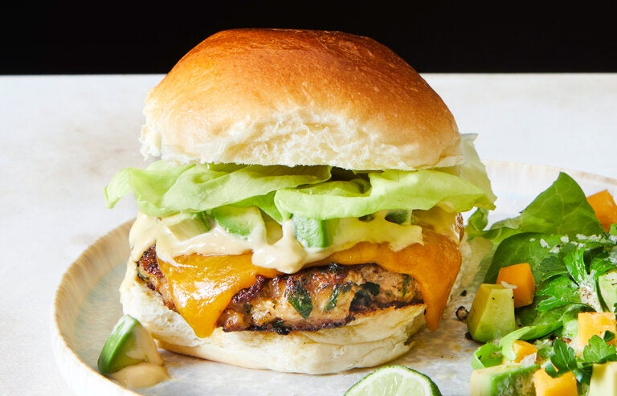

Home
Chicken burger

Description
This amazing dish is incredibly easy to make and very tasty too. All you need for this amazing dish is just a couple of ingrediantsand is highly customisable for those picky eaters.
Ingrediants
- chicken
- brioche
- favourite salad
- favourite dressing/s
Steps
- Heat a medium frying pay with a small amount of oil. Fry chicken for 10mins or untill there is no pink in the middle
- Turn the chicken occasionally. Whilst the chicken is frying, prepare the chips and salad.
- Once the chicken has no pink in the middle, its time to shred it using two forks